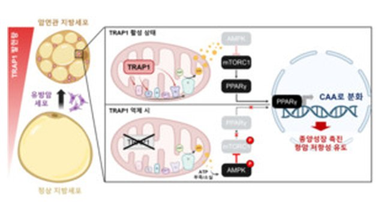
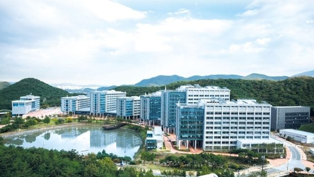
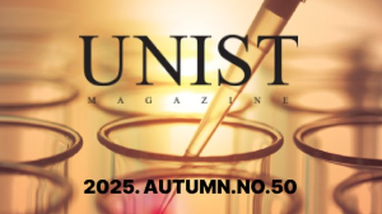
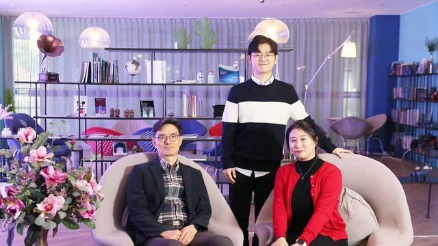

About
I am a postdoctoral researcher in the Department of Life Sciences at the Ulsan National Institute of Science and Technology (UNIST) and a researcher at SmartinBio. My research focuses on the mitochondrial chaperone TRAP1 and how it can be targeted to treat disease, from cancer to ischemic retinopathy.
As first author, I showed that targeting TRAP1 alleviates vascular pathologies in ischemic retinopathy, which points toward an eye-drop treatment J7. I also showed that cancer-associated adipocytes depend on TRAP1 to promote tumor growth J8. I currently lead an NRF-funded project as Principal Investigator (2025–2028).
Employment
Education
Publications
International journal papers (1st author)
International journal papers (co-author)
Awards, Grants & Recognitions
- Principal Investigator (PI), Jun. 2025 – Jun. 2028
- 210,000,000 KRW (approx. 157,000 USD)
Teaching Experience
Teaching Assistant
Academic Mentorship
Press
My research has been featured in major South Korean media outlets, including Yonhap News Agency and SBS Biz. Titles are translated into English.



